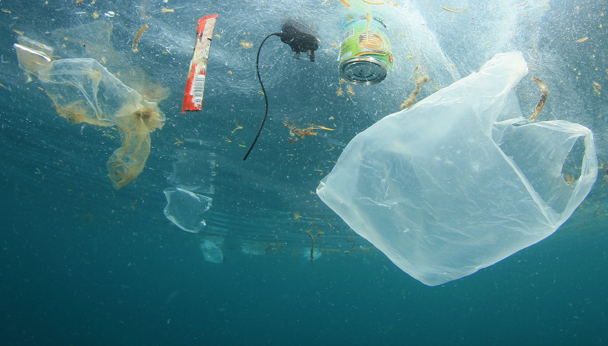

¿Qué es el impacto medioambiental?
Se define impacto ambiental como la “modificación del ambiente ocasionada por la
acción del hombre o de la naturaleza”. Un huracán o un sismo también pueden
provocar cambios ambientales. Existen diferentes tipos de impactos ambientales,
los cuales se clasifican de acuerdo a su origen. Estos son: el aprovechamiento de
los recursos naturales, contaminación, y la ocupación de territorio.
Día Mundial de la Educación Ambiental
Cada 26 de enero se conmemora el Día Mundial de la Educación Ambiental, que
parte de la Declaración de la Conferencia de las Naciones Unidas sobre el Medio
Ambiente en Estocolmo, Suecia, debido a la necesidad de contar con criterios y
principios comunes para orientar a la población en la preservación y mejora del
medio ambiente.
Los retos de la educación ambiental en México
A lo largo del tiempo se han diseñado varios proyectos y programas de educación
ambiental para poder abarcar a la mayor cantidad de la población. El objetivo es generar oportunidades para
desarrollar conocimientos, habilidades y valores para tener un futuro sustentable.
El mayor reto al cual enfrentarse es construir una ciudadanía formada y
comprometida con el cuidado del medio ambiente.
Para ello, se requieren las siguientes acciones: desarrollar formas de aprendizaje
innovadoras; priorizar enfoques comunitarios, basados en entornos sociales locales;
crear oportunidades de acción que permitan encontrar soluciones con un enfoque
de equidad y respeto.
¿Qué son los plásticos de un solo uso?
Los plásticos de un solo uso son aquellos materiales que están diseñados para ser
utilizados una vez, y luego ser desechados. Lo más común es que la persona solo
los utilice por unos minutos y luego los tire. Pueden estar fabricados total o
parcialmente de plástico. Estos materiales se encuentran en tenedores, cuchillos,
cucharas, platos, popotes, globos, vasos, entre otros.

¿Por qué es necesario reducir el consumo del plástico?
La contaminación generada por plásticos desechables afecta a más de
100,000 animales marinos y provoca la muerte de un millón de aves al año y
también daña la salud humana.
No es una problemática que solo afecta al medio ambiente, sino que también se han
encontrado microplásticos en alimentos y bebidas de consumo diario. Esto hace que
una persona pueda llegar a ingerir hasta 70 mil piezas de plástico al año.
¿Cuánto plástico se produce al año en México?
Durante 2022, en México se registró un consumo de plásticos de 5.9 millones de toneladas y una producción de 3.8
millones de toneladas, equivalentes a 400 mil millones de dólares. Anualmente se producen alrededor de 9 mil millones
de botellas plásticos, el equivalente a 216 millones de galones de petróleo.
A nivel global, ¿en qué lugar es considerado México como responsable de la contaminación por el consumo de plásticos?
México es considerado uno de los países que es responsable en la contaminación global, al ocupar el 12º lugar en
el consumo de plásticos y ser el productor del 2% de productos de este material a nivel mundial.

En México, ¿cuánto plástico produce una persona al año?
El consumo per cápita de plásticos en México se estimó en 66 kilogramos por habitante al año, y la generación de
residuos plásticos fue de 59 kilogramos por habitante al año.

¿Por qué México se encuentra entre los países que produce mayor cantidad de polietileno tereftalato (PET)?
México se encuentra entre los países que produce mayor cantidad de polietileno tereftalato (PET),
debido al alto consumo de refrescos y de agua embotellada. Se estima que al año se producen 200 botellas
de PET por cada mexicano.

Aproximadamente, ¿cuántas toneladas de plástico van a parar a los océanos al año?
De acuerdo al Informe Estado del plástico 2018 de ONU Ambiente, alrededor de 13 millones de toneladas de plástico
son vertidas en los océanos cada año.
Entre el 60 y el 80 por ciento de los residuos marinos son plástico.
En su mayoría son fragmentos menores a los cinco milímetros (microplásticos). Se estima que hay entre cinco
y 50 mil millones de microplásticos en el mar.
